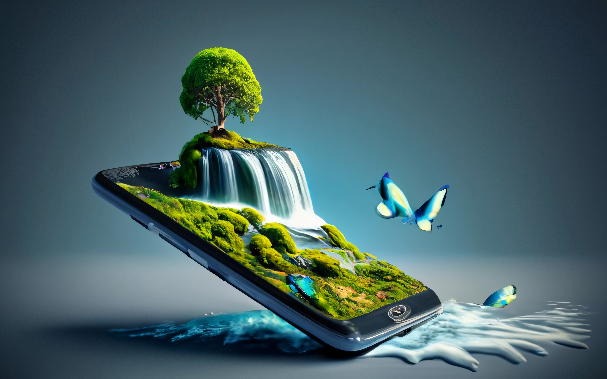
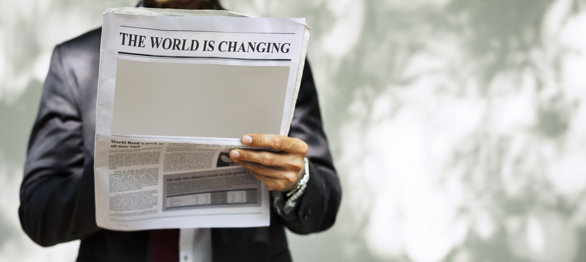

📺 Mídia tradicional
Inclui televisão, rádio, jornais e revistas. É utilizada para divulgar notícias,informações e programas de entretenimento.
Comunicação, informação e tecnologia no nosso dia a dia.
Explorando as diversas formas de transmitir informação no dia a dia.
Inclui televisão, rádio, jornais e revistas. É utilizada para divulgar notícias,informações e programas de entretenimento.

Inclui sites, blogs, aplicativos e redes sociais. Permite compartilhar conteúdos rapidamente pela internet.

É formada por materiais impressos, como livros, cartazes, panfletos, jornais e revistas.